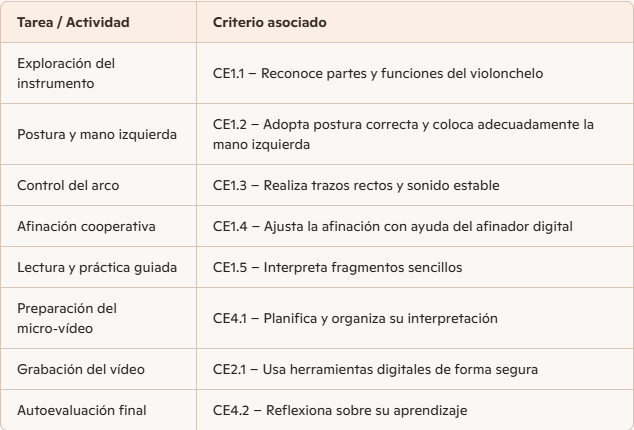

📘 GUÍA DIDÁCTICA “Tocamos canciones: Afinación Cooperativa y Autonomía Audiovisual en el Violonchelo”
1. Finalidad de la SdA
Esta Situación de Aprendizaje tiene como objetivo desarrollar en el alumnado de 8–9 años las competencias musicales básicas del violonchelo, junto con el uso responsable y autónomo de herramientas digitales. El proyecto culmina con la creación de un micro‑vídeo musical, donde el alumnado muestra su progreso técnico, expresivo y digital.
La SdA integra metodologías activas, trabajo cooperativo, autoevaluación y principios del Diseño Universal para el Aprendizaje (DUA).
2. Competencias específicas
La SdA contribuye al desarrollo de las siguientes competencias:
- CE1. Interpretación musical básica: dominio progresivo de postura, mano izquierda, arco y afinación.
- CE2. Competencia digital aplicada a la música: uso seguro y autónomo de herramientas digitales como afinadores online, Padlet y Clipchamp.
- CE3. Competencia social y cívica: trabajo cooperativo en la afinación por parejas.
- CE4. Competencia personal y aprender a aprender: autoevaluación mediante rúbrica y reflexión final.
3. Relación entre tareas y criterios de evaluación
La siguiente tabla muestra la relación directa entre las tareas del proyecto y los criterios de evaluación asociados:

4. Metodología
La SdA se basa en:
- Aprendizaje activo: el alumnado toca, experimenta, escucha y se graba.
- Trabajo cooperativo: afinación por parejas.
- Aprendizaje basado en retos: grabar un micro‑vídeo final.
- Aprendizaje multimodal: vídeos, audios, imágenes, demostraciones.
- Evaluación formativa y continua: instrumentos variados.
5. Organización del aula
- Espacio: aula de instrumento + zona tranquila para grabación.
- Agrupamientos:
-
- Individual (técnica)
- Parejas (afinación cooperativa)
- Grupo de 3 (puesta en común)
- Materiales: violonchelo, arco, afinador digital, tablet/móvil, atril.
- Recursos digitales: Padlet, Symbaloo, Clipchamp, afinador online.
6. Atención a la diversidad.
La SdA contempla:
- Adaptaciones de acceso
- Vídeos con subtítulos
- Imágenes claras y ampliables
- Ritmos diferenciados
- Adaptaciones metodológicas
- Ejercicios graduados por dificultad
- Repetición guiada
- Modelos visuales y auditivos
- Adaptaciones en la evaluación
- Repetición del vídeo si hay ansiedad
- Evaluación oral alternativa
- Apoyo visual en la afinación
7. Instrumentos de evaluación
La SdA utiliza 3 instrumentos:
- Rúbrica del micro‑vídeo
Evalúa postura, mano izquierda, afinación, arco, expresión y autoevaluación.
- Lista de cotejo de afinación cooperativa
Evalúa autonomía, discriminación auditiva y trabajo en pareja.
- Registro anecdótico
Recoge observaciones cualitativas del proceso.
8. Recomendaciones para otros docentes
- Presentar la SdA de forma visual y motivadora.
- Dedicar tiempo a la postura antes de avanzar.
- Usar el afinador digital como herramienta pedagógica, no solo técnica.
- Fomentar la grabación como proceso natural de aprendizaje.
- Revisar los vídeos con el alumnado para reforzar la autoevaluación.
- Mantener un clima de confianza durante la grabación final.